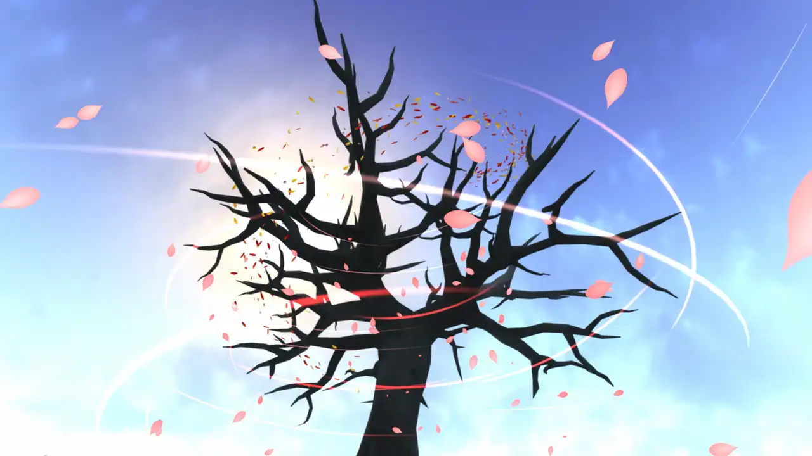
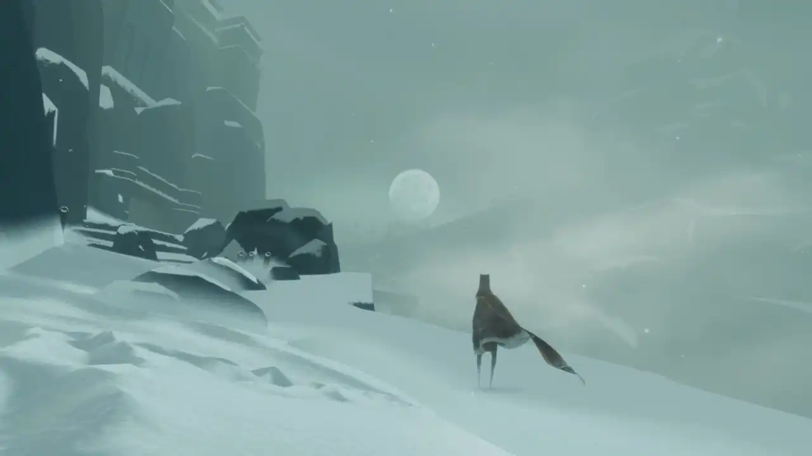
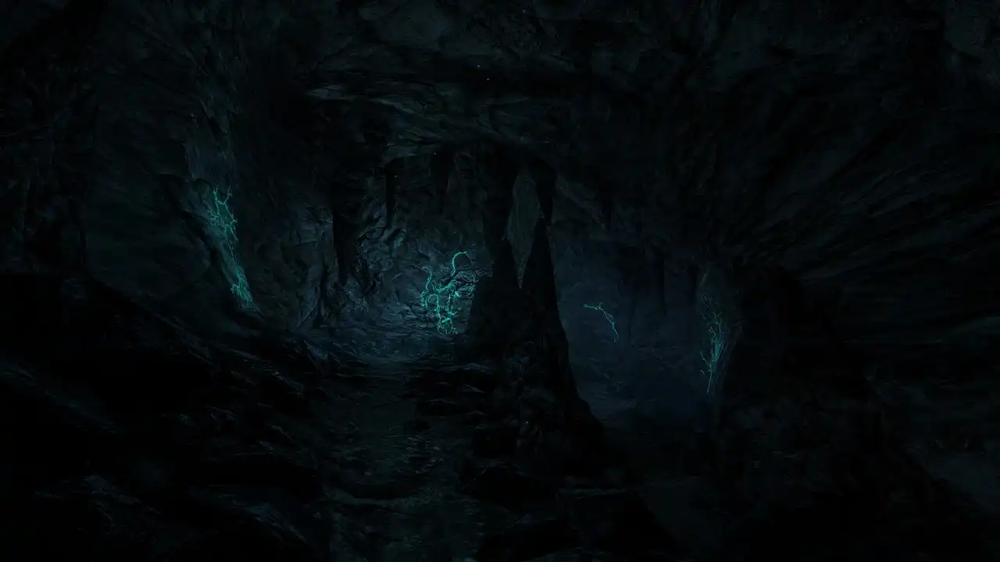
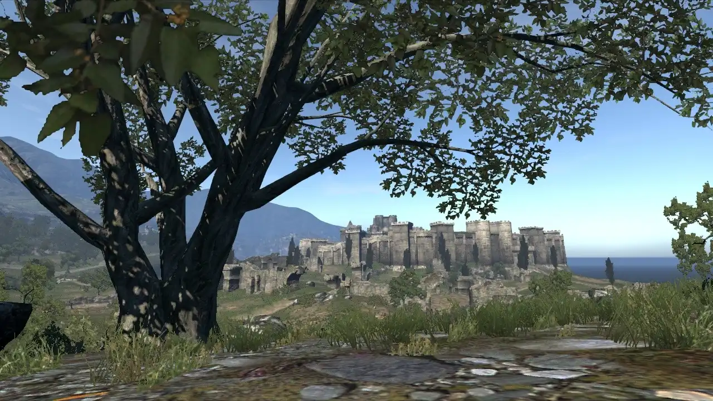
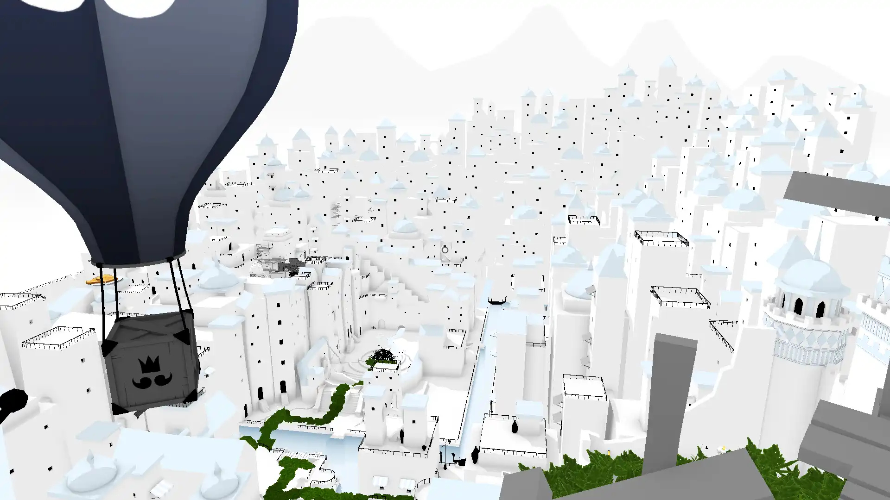

Favourite video games
I played quite a lot of games in a vast variety of genres, but usually only 'walking simulators' truly impress me. I love just wandering around. No fighting, no interactions. I can simply appreciate serenity of the surrondings, without my anxious ass being threatened by anything.
Flower
by thatgamecompany
What's amazes me the most about this game is that it doesn't even have a protagonist. It kinda has 'The World Is Not Ending' vibe (see 'Videos' section in my first Bookmark compilation). Yes, we screwed up, but there's hope for the better future still.
Journey
by thatgamecompany
Couldn't really comprehend what the story is about, it's more abstract than, say, ABZÛ that it often gets compared to in terms of the message. But still I felt a catharsis finishing this one. It makes me feel connected to the world around me and that my relationship with it is reciprocal.
Dear Esther
by thechineseroom
I loved untangling the allegorical story with bits and pieces of visual cues and narration. If you want to spend an evening sobbing (in a good way), this is the one.
Dragon's Dogma
by Capcom
It's an aRPG, but there's some charm to simply walking there along the shore or in the woods. It's long been my special interest, and the message helped me cope in my most difficult times. I ended up questioning that message and some problematic stuff like racism and misogyny, but I can find things to value about this game anyway. Also you can create femboy characters. Yep. That's the most important thing.
The Unfinished Swan
by Giant Sparrow
Games where you paint always get me. This one is a whimsical fairytale with a classic 'the real treasure was the friends we made along the way' type of story. What matters is the process of making something rather than the result. This is what I love about walking simulator games in general.
Other games I played
Obscure and nostalgic titles I can appreciate:
- Anachronox.
- Tension: The Void.
- I of the Dragon. I love it when the dragon is the protagonist rather than The Big Bad! My favourite one is the necromancer.
- The Legend of Kyrandia: Book 2.
Games you probably know, I poured hours in:
- Plague Inc.
- Cities: Skylines.
Games for LAN party via Hamachi:
- BMW M3 Challenge.
- Dragon's Dogma Online. The official servers got shut down, but fans are reviving the game.
- FlatOut.